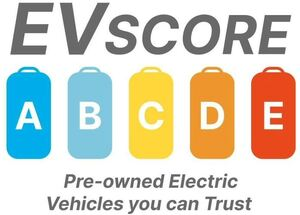

Trade Mark Journal No.2025/031 1 August 2025
WO0000001865200 (35,36,38,41,42)
Office of origin: European Union Intellectual Property Office (EUIPO)
Date of International Registration:18 May 2025
Date of designation in the UK:
18 May 2025

The mark contains the colours blue, light blue, yellow, orange and red
Each color claimed is affixed in a vertical cylinder from left to right
- Class 35
- Advertising, marketing and promotional services; advertising; online advertising on computer networks; rental of advertising time on all communication media; advertising mail; dissemination of advertising matter and advertising material [leaflets, brochures, flyers and samples]; updating of advertising material; advertising by mail order; preparation of personalized ads on behalf of third parties; classified ad services; assistance to commercial and industrial companies in their business operation; advice or information in commercial business; commercial promotion; data search in computer files for third parties; data collection in a central file in the automotive field; compilation and analysis of information and data relating to business management; price comparison services; market study and analysis services.
- Class 36
- Insurance services; insurance brokerage; financial advice relating to investments; motor vehicle financing services; providing information with respect to used automobile appraisal; used vehicle appraisal; advice and brokerage services with respect to vehicle insurance; information and consultation services with respect to insurance.
- Class 38
- Telecommunications; information with respect to telecommunications; communications by computer terminals; communications by fiber-optic networks; radio communications; telephone communications; cellular telephone communication; providing user access to global computer networks; provision of forums online; provision of telecommunication connections to the Internet or to databases; transmission and dissemination of data via a global computer network or the Internet in the field of marketing of used land vehicles with so-called zero-emission mobility (electricity, solar or other).
- Class 41
- Training; education; entertainment; publication of texts other than advertising texts; electronic publication of books and journals online; electronic desktop publishing; online provision of electronic publications, not downloadable, in the cultural and educational field; organization and conducting of colloquiums, conferences and congresses.
- Class 42
- Computer diagnostic services; electronic data storage.
LRHS97
Representative: Stéphane Robert-Gary, 14 Rue Séguier, F-75006 Paris, FRANCE